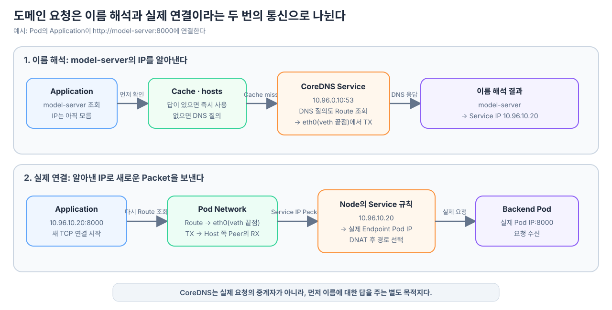

애플리케이션이 http://model-server:8000처럼 도메인 이름을 사용한다고 해보자. IP Packet의 목적지에는 model-server라는 문자열을 넣을 수 없으므로, 실제 연결을 시작하기 전에 이 이름을 IP 주소로 바꾸는 과정이 필요하다.
이때 CoreDNS가 실제 애플리케이션 요청을 중계하는 것은 아니다. 이름을 묻는 DNS 통신과, 알아낸 IP로 보내는 실제 통신은 서로 다른 두 번의 네트워크 요청이다.
1. 이름 해석
model-server → DNS 질의 → 10.96.10.20
2. 실제 연결
10.96.10.20:8000으로 TCP 연결

도메인 이름은 연결 전에 IP 주소로 해석되어야 한다
애플리케이션이 Socket 연결을 시작하려면 최종적으로 목적지 IP와 Port가 필요하다.
http://model-server:8000
└──────┬──────┘
이름
이름 해석 결과
10.96.10.20:8000
└─────┬──────┘
실제 연결에 사용할 IP와 Port
이름을 사용했다고 해서 항상 곧바로 DNS 서버에 Packet을 보내는 것은 아니다. 애플리케이션과 실행 환경은 먼저 이미 알고 있는 답이 있는지 확인할 수 있다.
이름 해석 요청
→ Application 또는 Runtime의 Cache 확인
→ 운영체제의 이름 해석 규칙과 Cache 확인
→ hosts 파일에서 확인
→ 답이 없으면 DNS 서버에 질의
구체적인 순서와 Cache의 위치는 언어 Runtime, Linux의 이름 해석 설정과 DNS Cache 구성에 따라 달라질 수 있다. 핵심은 이미 답을 가지고 있으면 외부 DNS 질의를 생략할 수 있지만, 실제 연결 전에 이름은 반드시 IP 주소로 해석되어야 한다는 점이다.
IP 주소를 직접 사용한다면 이름 해석은 필요하지 않다.
http://10.96.10.20:8000
Pod는 DNS 서버의 주소를 미리 알고 시작한다
“CoreDNS의 주소도 도메인으로 알아내야 하는 것 아닌가?”라는 순환 문제는 Pod의 DNS 설정으로 해결된다.
Kubernetes는 Pod를 준비할 때 DNS 정책과 Cluster 설정을 바탕으로 Pod 안의 /etc/resolv.conf를 구성한다. 일반적인 형태는 다음과 같다.
nameserver 10.96.0.10
search default.svc.cluster.local svc.cluster.local cluster.local
여기서 10.96.0.10은 보통 CoreDNS 앞에 있는 DNS Service의 ClusterIP다. 이 값은 DNS로 다시 찾는 이름이 아니라, Pod가 처음부터 알고 있는 IP 주소다.
구성에 따라 NodeLocal DNSCache처럼 다른 주소가 nameserver에 들어갈 수도 있다. 어느 구현이든 Pod가 DNS 질의를 보낼 최초 목적지 IP가 미리 설정된다는 원리는 같다.
DNS 질의 Packet의 경로도 Routing 조회로 결정된다
Application이 model-server의 주소를 로컬에서 찾지 못하면 /etc/resolv.conf에 설정된 DNS 서버로 질의를 보낸다.
출발지: Pod IP와 임시 Port
목적지: 10.96.0.10:53
Protocol: 보통 UDP, 필요하면 TCP
DNS 질의도 IP Packet이므로 예외가 아니다. Linux Kernel은 Pod Network Namespace의 Routing 정보를 조회한 뒤 DNS Packet을 Local로 처리할지, 어느 출력 Interface와 다음 경로로 보낼지를 결정한다. 여기서는 목적지가 CoreDNS Service IP이므로 일반적인 veth 기반 구성에서 eth0이 선택된다.
Application의 DNS 질의
→ 목적지 10.96.0.10:53
→ Pod의 Routing Table 조회
→ 출력 Interface eth0 선택
→ veth pair를 지나 출발 Node로 이동
→ Node의 Service 규칙과 Network 경로
→ CoreDNS Pod에 도착
CoreDNS Service가 ClusterIP로 구성됐다면 출발 Node의 Service 규칙이 10.96.0.10:53을 실제 CoreDNS Pod IP와 Port로 바꿀 수 있다. 이후 Node의 Routing Table과 CNI가 준비한 경로를 통해 해당 CoreDNS Pod까지 전달된다.
따라서 Route 판단은 DNS 조회가 끝난 뒤에만 등장하는 것이 아니다. DNS 서버에 이름을 묻는 첫 번째 IP Packet부터 이미 Kernel의 Routing 조회가 일어난다.
CoreDNS의 응답은 Service 종류에 따라 달라질 수 있다
일반적인 ClusterIP Service의 이름을 조회하면 CoreDNS는 그 Service의 안정적인 ClusterIP를 응답한다.
model-server.default.svc.cluster.local
→ CoreDNS
→ 10.96.10.20
이 경우 CoreDNS가 실제 Backend Pod 하나를 선택한 것은 아니다. 이후 10.96.10.20으로 보내는 Packet이 Node의 Service 규칙을 만났을 때 Endpoint 중 하나가 선택된다.
CoreDNS의 역할
이름 → Service ClusterIP
Service 규칙의 역할
Service ClusterIP → 실제 Endpoint Pod IP
반면 Headless Service는 고정된 ClusterIP 대신 실제 Endpoint 주소들을 DNS 응답으로 제공할 수 있다. 이때는 클라이언트가 응답받은 Pod IP 가운데 하나로 직접 연결한다.
즉, “도메인을 조회하면 언제나 Service ClusterIP 하나가 나온다”가 아니라 어떤 Kubernetes 객체와 DNS Record를 조회했는지에 따라 응답 형태가 달라질 수 있다.
CoreDNS가 Service마다 정적 Record를 직접 추가하는지, API Server의 어떤 상태를 관찰해 응답을 갱신하는지, 그리고 kube-proxy와는 어떤 관계인지 궁금하다면 CoreDNS는 Service 정보를 어떻게 알아내고 DNS 응답을 갱신할까?에서 이어서 살펴본다.
DNS 응답을 받은 뒤 실제 요청이 새로 시작된다
CoreDNS가 10.96.10.20을 응답하면 DNS 통신은 끝난다. 그다음 Application은 응답받은 IP와 원래 URL의 Port를 사용해 별도의 연결을 시작한다.
첫 번째 통신: DNS 질의
Pod
→ 10.96.0.10:53
→ “model-server의 IP는 무엇인가?”
← “10.96.10.20이다”
두 번째 통신: 실제 요청
Pod
→ 10.96.10.20:8000
→ TCP 연결과 애플리케이션 요청
두 번째 Packet도 다시 Pod의 Routing Table을 조회한다. 그 결과 Pod 쪽 veth 끝점인 eth0에서 송신되고, Peer인 Host 쪽 veth 끝점에서 수신된다. 목적지가 Service ClusterIP라면 Node의 Service 규칙이 실제 Endpoint Pod IP로 바꾸고, 변경된 목적지를 향해 다시 경로를 결정한다.
CoreDNS는 두 번째 통신의 중간에 있지 않다.
잘못된 흐름
Pod → CoreDNS → 대상 Service
실제 흐름
Pod → CoreDNS 이름을 묻고 응답을 받는 통신
Pod → 대상 Service 알아낸 IP로 보내는 별도의 통신
하나의 도메인 요청에는 두 번의 Route 판단이 생길 수 있다
Cache와 hosts 파일에 답이 없어 DNS 질의가 발생했다면, Pod에서는 최소 두 종류의 목적지에 대해 Route 판단이 일어난다.
DNS 서버 IP 10.96.0.10
→ 첫 번째 Route 조회
→ DNS 질의와 응답
Service IP 10.96.10.20
→ 두 번째 Route 조회
→ 실제 연결과 요청
DNS Cache에 유효한 답이 있다면 첫 번째 네트워크 통신은 생략되고 실제 요청만 발생한다. 하지만 이름 해석과 실제 통신이 서로 다른 단계라는 구분은 그대로 유지된다.
이 흐름을 잡으면 “Application이 목적지 IP를 지정한다”는 표현도 더 정확히 읽을 수 있다. Application이 처음부터 IP를 알고 있을 수도 있고, 도메인으로 시작했다면 이름 해석을 먼저 마친 뒤 얻은 IP를 Socket 연결의 목적지로 사용한다.